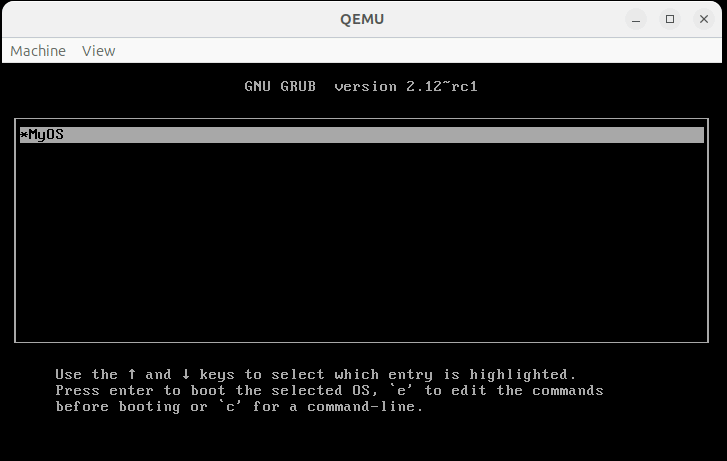

What
What we are trying to achieve
It would be nice to be able to extend the CustomOS without relying on other operating systems to write additional software for it. For this I’ve added a text editor to the CustomOS. It can be used to write code. An additional built-in C-Code compiler can compile and run code. With both combined we can write, compile and run code from inside the CustomOS.
Contents
Contents
Background
Modern operating systems have become so powerful by a process known in computer science as “bootstrapping”. The first computers were hand-wired and relied on punch cards that were manually punched in order to set the signal lines high or low.
Later came more sophisticated computers where the boot loader was on such punch cards, but they were used to load the drivers, editors and compilers in order to access a spinning disk with which then even more complex software could be written, stored and loaded later on.
Eventually the point of early operating systems such as DOS (Disk Operating System) was reached. After a computer booted it’s built-in BIOS it could load DOS from a floppy disk. Later larger storage media came about and drivers for things like CD-ROM drives, large ATA- and SCSI hard drives.
From there, within MS-DOS, Windows was written. Early Windows versions up until Windows XP loaded MS-DOS first and then launched Windows from there. Meanwhile DOS has been abandoned.
Nowadays developers write most software on very advanced operating systems such as Windows, Linux or MacOS.
For the CustomOS we’re reproducing the stages of early computer development. After Part 1 through 9 we are nearly at the stage of an early DOS. What is missing is a text editor, MS-DOS had the MS-DOS Editor “EDIT”, and some compilers to convert source code written in that text editor into binaries that can be run.
Text Editor
For the text editor I’ve gone with a simple implementation. As we already have a terminal written in Rust we can write the Editor in a very similar manner.
Here Rust really excelled. For such a task we need a substantial amount of character manipulation on arrays. Rust actively prevents developers from iterating out of bounds of arrays. That greatly helped avoiding bugs before they happen.
I took some time and rewrote the editor a couple of times as I wanted it to be as reliable as possible. Nothing would be more annoying than a text editor that displays something different than it writes to disk or if it were to mess up a file. Especially if we’ll attempt writing software with it.
The editor has a very simplistic interface to the rest of the CustomOS. All I needed were functions to get and set entire text buffers, some for writing and drawing to screen and init() and update() hooks.
Compiler
For the compiler things get complicated. As seen in the last part of the series we can run opcodes - the machine codes for the processor - by storing them in a buffer in memory and then using the assembler jmp to jump to them.
Of course we could use the text editor and manually write these as hex values, save them and then load and run them.
But in order to productively develop software in the CustomOS we need something that can take source code written in a higher-level language such as C and automatically translate it into opcodes that we can run. For this we need a compiler.
Compiler vs. Interpreter
A compiler will take the source code and convert it to binaries. These can then be run on directly on the machine.
In contrast an interpreter would run command for command directly without writing a binary to disk in between.
Both has its uses. Python and Java-Script are both interpreter languages, while C/C++ is compiled. Java is somewhere in between with the source code being compiled to an intermediary format that is then interpreted on the Java virtual machine.
There are also very useful scripting languages such as Tcl and Lua that are also interpreted.
If we want to be able to freely extend the operating system, without an interpreter blocking direct access to the hardware, we need a full compiler.
Choosing a compiler to integrate
From the top of my head there are some options.
Common interpreters that could probably be easily added exist for
- Tcl
- Lua
- Basic
But as we want a full compiler and ideally one that can compile C-Code there seems to be only one reasonably lean option
- TinyCC
Only with real C-code and the ability to manipulate memory can I write application drivers that can significantly extend the functionality of the CustomOS.
Full-blown compilers like
- Gcc
- Clang
are much to large and difficult to integrate for our purpose.
Challenge
The challenge in adding such a compiler, even the TinyCC compiler, is the complex code base and the high number of dependencies on the C-Standard-Library.
I need a lot of string conversion functions from all sorts of integer widths to string. These kind of functions need to work reliably and so I’ll probably have to bring in some portions of C-Standard-Library implementations.
From first inspection I thought I could get away without implementing a heap (my CustomOS currently has no malloc). As it turned out however, I did have to add a heap, because TinyCC reads the code, needs to write it somewhere. The output can vary so dramatically in size that a fixed buffer just wouldn’t make sense.
C-Standard-Libraries
There are a number of C-Standard-Libraries.
- glibc - the most common, but very large, c library
- ulibc - micro libc reduced and simplified for micro controllers
- dietlibc - similar
- newlib - standard c library replacement with reduced functionality
- musl - this is used Linux distributions and also in the GCC compiler itself
I decided to go with portions of code from musl. It has some very elegant implementations, but is still huge with 1601 source files and 737 header files. Much of which we will not need. Musl is structures in a way that much of the features can be compiled standalone.
musl-1.2.5$ find . -type f | grep "\.c" | wc -l
1601
musl-1.2.5$ find . -type f | grep "\.c" | wc -l
737
Required Signatures from CStdLib
The TinyCC compiler comes with a header that conveniently lists all the external functions that we will need to implement for it to run.
cat tcc-0.9.27/tcclib.h
void *calloc(size_t nmemb, size_t size);
void *malloc(size_t size);
void free(void *ptr);
void *realloc(void *ptr, size_t size);
int atoi(const char *nptr);
long int strtol(const char *nptr, char **endptr, int base);
unsigned long int strtoul(const char *nptr, char **endptr, int base);
void exit(int);
typedef struct __FILE FILE;
#define EOF (-1)
extern FILE *stdin;
extern FILE *stdout;
extern FILE *stderr;
FILE *fopen(const char *path, const char *mode);
FILE *fdopen(int fildes, const char *mode);
FILE *freopen(const char *path, const char *mode, FILE *stream);
int fclose(FILE *stream);
size_t fread(void *ptr, size_t size, size_t nmemb, FILE *stream);
size_t fwrite(void *ptr, size_t size, size_t nmemb, FILE *stream);
int fgetc(FILE *stream);
char *fgets(char *s, int size, FILE *stream);
int getc(FILE *stream);
int getchar(void);
char *gets(char *s);
int ungetc(int c, FILE *stream);
int fflush(FILE *stream);
int putchar (int c);
int printf(const char *format, ...);
int fprintf(FILE *stream, const char *format, ...);
int sprintf(char *str, const char *format, ...);
int snprintf(char *str, size_t size, const char *format, ...);
int asprintf(char **strp, const char *format, ...);
int dprintf(int fd, const char *format, ...);
int vprintf(const char *format, va_list ap);
int vfprintf(FILE *stream, const char *format, va_list ap);
int vsprintf(char *str, const char *format, va_list ap);
int vsnprintf(char *str, size_t size, const char *format, va_list ap);
int vasprintf(char **strp, const char *format, va_list ap);
int vdprintf(int fd, const char *format, va_list ap);
void perror(const char *s);
char *strcat(char *dest, const char *src);
char *strchr(const char *s, int c);
char *strrchr(const char *s, int c);
char *strcpy(char *dest, const char *src);
void *memcpy(void *dest, const void *src, size_t n);
void *memmove(void *dest, const void *src, size_t n);
void *memset(void *s, int c, size_t n);
char *strdup(const char *s);
size_t strlen(const char *s);
#define RTLD_LAZY 0x001
#define RTLD_NOW 0x002
#define RTLD_GLOBAL 0x100
void *dlopen(const char *filename, int flag);
const char *dlerror(void);
void *dlsym(void *handle, char *symbol);
int dlclose(void *handle);
As you can see some of the functions are trivial, but there are also some really nasty ones.
All printf-functions with a v in front are “variadic” functions that require va_args, va_lists, etc to be implemented. I do have a printf implementation in the CustomOS, but I’m not sure if it’s feature complete enough. We may be able to get rid of some of those by patching TinyCC.
The strtol and strtoul have really complex implementations in glibc. In musl the implementation is much more elegant, but relies on FILE*-functions and so we would need to implement all file handling functions and wire them to the FatFs library we use for disk input/output.
The file handling functions can’t really be circumvented, as the compiler also needs to write compiled binary either to disk or memory in order to run it.
As I saw later some of these includes will pull in system calls, threading pthread_t, localized strings locale_t, formatted date and time time_t, handling of wide character wchar_t and loads and loads of defines and typedefs that need to be configured to our machine.
In order to get the TinyCC compile to work in the CustomOS we will have either implement some of these interfaces or remove features from TinyCC and musl until we can get it build.
Afterwards we can try to reduce code to only the portions that we require.
Maintaining the gap to Unixoid operating systems
Of course the CustomOS should be my own lean operating system. I don’t want to bring in so many dependencies that it turns into a poorly written Linux-Kernel with butchered drivers.
The TinyCC is a big package that forces me to bring in quite a few C-Standard-Library and file handling. I’ll try to keep things as lean as possible.
How
Text Editor - Implementation
With the goals set, I started with the text editor implementation. It was rather easy going with some fiddling around to get automatic line breaks working properly.
Eventually I found that conversion functions “bufferPosToBirtualXYPos” and “virtualXYPosToBufferPos” made things a lot easier. Doing this I could boil the code down to 380 lines. Much of the manual out-of-bounds checking I have in order to avoid adding exception handling could be circumvented all together.
Software Interfaces
The text editor code ties into the rest of the CustomOS by a very basic interface.
extern "C" {
fn ataGetFileContents(fileName: *const cty::c_char, buffer: *mut cty::c_char, bufferLen: u32);
fn ataSetFileContents(fileName: *const cty::c_char, buffer: *mut cty::c_char, bufferLen: u32);
}
use crate::shellCharArrayToCChar;
It uses two function from my lean PCI/IDE disk driverata.h to read and write entire buffers to disk. To use them I need to translate Rust arrays to C char arrays, for this I have shellCharArrayToCChar which is implemented in the code of the terminal.
pub unsafe fn editorSetFilename(filename: &[char;255], length: usize)
pub unsafe fn editorKeyboardDown(key: cty::c_char, scancode: u8)
pub unsafe fn editorUpdate()
When in Editor-Mode the CustomOS sends all screen update calls to editorUpdate() and keyboard button presses to editorKeyboardDown.
The filename with which the editor was opened with, shell syntax is ed <filename>, is sent to editorSetFilename.
use crate::shellWidth;
use crate::shellHeight;
use crate::shellFontWidth;
use crate::shellFontHeight;
Additionally the editor needed some functions to query screen width and height as well as font width and height.
use crate::shellSetPixel;
use crate::shellRenderChar;
use crate::COLOR_ [..]
It can then set pixel to a specific color or render characters with the functions provided by the CustomOS terminal.
use crate::shellSetActive;
And when exiting we only signal the terminal to switch its enum back to stop relaying update() and keyboardDown() events to the editor, but back to the terminal as before.
User Interface
For the user to interact with the Editor apart from the expected typing into the text field, I needed to be able to save and exit.
After considering how vim, nano or even the MS-DOS Editor do this I decided to just use the function keys. This is similar to the MS-DOS Editor, but without the menus. The editor is self explanatory as it displays to the user which function keys do what in the bottom footer of the screen.
Compiler - Integration
Getting the compiler in there was a bit of an effort. I had first started with glibc, but then gave up because it was just far too large and intertwined with Linux. After switching to musl I was able to move forward. In the end I found the tccboot project that gave me the missing bits and pieces to get it running.
C-Code Interpreter with TinyCC
As a starting point I added a function intended to compile and run incoming C-code from a char array. From there I started fixing missing symbol by missing symbol and adding in glue code as needed.
There is a good example snippet in one of the tests in TinyCC under tcc-0.9.27/tests/libtcc_test.c. I’ve reduced it to the bare minimum and was left with this:
void tinycc_run_code(const char * program) {
TCCState *s;
int i;
int (*func)(int);
s = tcc_new();
if (!s) {
fprintf(stderr, "Could not create tcc state\n");
exit(1);
}
tcc_set_output_type(s, TCC_OUTPUT_MEMORY);
if (tcc_compile_string(s, my_program) == -1)
return 1;
/* relocate the code */
if (tcc_relocate(s, TCC_RELOCATE_AUTO) < 0)
return 1;
/* get entry symbol */
func = tcc_get_symbol(s, "foo");
if (!func)
return 1;
/* run the code */
func(32);
/* delete the state */
tcc_delete(s);
return 0;
}
The function tinycc_run_code can accept a string containing C-Code and then run it through TinyCC. TinyCC will compile the binary and write it to memory. We can then jump into it (see the line func(32);) and run it.
Attempt 1 - Using TinyCC as a single header lib
There is a single header variant of TinyCC written by github/kyx0r.
On my first attempt I tried to just build that straight into the CustomOS and try to fix the missing symbols there.
I soon ended up with having to implement really nasty functions like strtoull where, at the time, I had only the very convoluted implementation in glibc or the implementation on musl that relies heavily on file pointers, and nasty things like thread locking functions underneath.
After many modifications I wasn’t even sure if the TinyCC would even work anymore. I had commented out many file handling functions, but then realized that TinyCC uses file handlers to also compile to memory before running the code. So I became fairly certain the code wouldn’t work and started over.
Attempt 2 - Using musl C standard library
So after giving up on the single header lib attempt I started again from the original TinyCC and the Musl code. These became incredibly difficult tedious to rewire and brought so much unwanted functionality in, that I had to reiterate to a new approach.
I tried to build it with the cross-compile tool chain of the CustomOS. Every time a function was missing, I searched through libmusl with grep to find it and added each include folder to the list of includes.
Now musl uses configure to configure the workspace based on *.in-files. I can’t really reliably use this on my custom tool chain and want to control every setting manually. So every time a define or typedef was missing I added it to my manually generated alltypes.h file.
After a lot of trial and error my Makefile looked like this.
echo -e "#pragma once \n#define TYPEDEF typedef\n
#define size_t unsigned int\n#define ssize_t unsigned int\n
#define __isoc_va_list void *\n#define uint32_t unsigned int\n
#define int32_t int\ntypedef struct _IO_FILE FILE;\n
typedef int32_t off_t;\n" | cat - musl-1.2.5/arch/i386/bits/alltypes.h.in | tee musl-1.2.5/arch/i386/bits/alltypes.h
$(CC) -c tcc-0.9.27/tests/libtcc_test.c -Imusl-1.2.5/include/ -Imusl-1.2.5/arch/i386 -Imusl-1.2.5/src/internal/ -Itcc-0.9.27/ -o main
Of course a large number of linker errors persisted, but I knew that all function declarations were somewhere in the source files corresponding to those headers.
Bringing it into the CustomOS
From there I brought the code into the CustomOS.
For every missing symbol in the linker step I had to locate the code and build the respective source files.
stdio_impl.c was an interesting one. Musl expects the stdio functions to be implemented by the user.
This is also the location where the file handling functions fopen/fwrite/etc need to be wired to the FatFS library.
I’ve added two header files full of typedefs and defines to make the CustomOS, Musl and TinyCC work together.
cp lib/libmusl_config.h lib/musl-1.2.5/arch/i386/bits/alltypes.h
cp lib/tinycc_config.h lib/tcc-0.9.27/config.h
Removing functionality to get it to build in the CustomOS
There are quite a few particularly painful functionalities in Musl and TinyCC.
- strtol, strtoll, strtoull - that convert strings to different sized integers rely on file handling functions. As established above we need file handling functions to write the compiled code and so there is no way around this for TinyCC to function.
- vfprintf, vsnprintf - are variadic printf functions that write to strings or files. It turns out these can be removed as TinyCC only uses them for its command-line interface that we won’t need.
- strcasecmp, strncmp, etc - have localized variants that require locale_t. This drags in a lot of excess functions. We can strip the localized strings out and comment out where they are used.
- gettimeofday, time_t - in many places time_t is used to measure elapsed time or to use
__time__macros in the C-Code compiled by TinyCC. The time features go all the way down to hardware access. I’ve decided to just disable this. - wchar_t - the code that handles string functions also pulls in functions for handling wide chars. That could also be removed.
- pthread - portions of musl had to be commented out or disabled by define to avoid bringing in pthread
- semlock - musl uses pthread in particular for the thread-safe fget/fput implementations. I’ll likely have to re-implement them for use without pthread.
- locking - in general, fclose, fflush, puts functions in musl use a FLOCK and FUNLOCK macro. This is not a multi-tasking operating system and I don’t want to implement that functionality, so I had to comment these macros out.
Typedefs and Defines
Because musl and tinycc support various CPU architectures many types are set by define or typedef my configure during build.
Many types from limits.h like int64_t, size_t, etc had to be defined in my libmusl_config.h and tinycc_config.h. A lot of defines were also set or unset in order to disable functionality I didn’t want to have to write glue code for.
Resolving Missing Symbols
After getting to the linking step things became easier. At that point it was clear that all functions exist somewhere. I just need to configure my Makefile to build the correct files.
By building and checking the command-line output I can get a list of all missing symbols:
make 2>&1 | grep "undefined reference" | awk '{ print $5 }' | sort | uniq
`atoi'
`close'
`exit'
`fclose'
`fdopen'
`fflush'
`fputc'
`free'
`fwrite'
[..]
With some more shell magic I can get a list of files where these symbols are likely implemented
make 2>&1 | grep "undefined reference" | awk '{ print $5 }' | sort | uniq | awk '{print substr($0,2,length($0)-2)}' | xargs -I % sh -c 'find -name %.c;'
./lib/musl-1.2.5/src/stdlib/atoi.c
./lib/musl-1.2.5/src/unistd/close.c
./lib/musl-1.2.5/src/exit/exit.c
./lib/musl-1.2.5/src/stdio/fclose.c
./lib/musl-1.2.5/src/stdio/fflush.c
./lib/musl-1.2.5/src/stdio/fputc.c
./lib/musl-1.2.5/src/stdio/fputs.c
./lib/musl-1.2.5/src/malloc/free.c
[..]
From there I can make a concious decision on whether or not I want to import that functionality and whether I can patch musl to not pull it in.
Functions like free are tied to malloc and a heap, which I’m actively trying to void.
In musl close, fgets, fputs are implemented via system calls, that work only for Linux, so I need to rewrite or avoid them.
Attempt 3 - Success with tccboot
At that point I started checking online and in osdev-forums, if anyone had ever put TinyCC into any operating system other than Linux.
The breakthrough moment occured, when I found out about tccboot. Someone, for fun and giggles, had implemented a tiny x86 boot loader that loads nothing more than TinyCC and then complies the Linux-Kernel on the fly before continuing to boot with it.
Significance of tccboot for this project
The significance for what I’m doing is multifold:
- this is a very minimal glue code for TinyCC
- it brings implementations of most of the functions TinyCC depends on
- a boot loader is very close to what I’m doing in my CustomOS
- using this means there is significantly less code to adapt
The art of this code is in selecting the right lean implementations for common functions. tccboot does this. In fact it’s a goldmine of beautiful, simple and bloat-free original implementations by some really famous software developers.
- ctype.c - array of ctypes for binary - ‘92 by Linus Torvalds himself
- dtoa.c - self-contained double to string conversion that is an absolut bitch to have to implement yourself - ‘91 by David M. Gay from Lucent Technologies
- malloc.c - a simple drop-in malloc implementation - ‘02 by Doug Lea from the CS department of the State University of New York
- vsprintf.c - “simple_strtol” , “simple_strtoull” implementation that I had so much trouble with previously - ‘92 by Lars Wirzenius and Linus Torvalds
- gunzip.c, inflate.c - some really minimalist decompression code that I might use in future - ‘92 by Mark Adler, Hannu Savolainen and Nicolas Pitre
Malloc
TinyCC requires a heap and there is no good way around this. A basic heap is not very difficult to implement, but with allocation and deallocation schema, fragmentation and all things considered it can get tricky.
I’m using the malloc implementation that came with tccboot-0.1
Initially I had some trouble getting this setup without the CustomOS locking up. For future reference this is the calling sequence of the first call to malloc:
Glue-Code Layer
During integration of the TinyCC compiler I ran into a bunch of issues I had to fix.
- a substantial amount of glue code was required to make all the types and functions available
- some taken from tccboot-0.1, some from musl-1.2.5
- the aforementioned time_t had to be removed as well as all references to “getenv”, a function to get Linux environment variables
- there is functionality in TinyCC to set memory pages executable and that functionality had to be removed
In the end I wrapped all the glue code, defines and typedefs that were required into tinycc_compat.c/.h while tinycc_interpreter.c/.h contains the code to compile and run C-Code either from file or a hard-coded example application.
Example Application
I’ve added the following example application to demonstrate the functionality.
void* (*putchar)(char);
const char * name() {
return "Example Application";
}
void setPutCharCallback(void* (*putchar_)(char)) {
putchar = putchar_;
}
void init() {
char c[] = "Hello from example application";
for(int i = 0; i < 30; i++) {
putchar(c[i]);
}
return;
}
The CustomOS loads it with TinyCC from a string. It then looks up the symbols name, setPutCharCallback and init`.
From there it will use name() to get the name and write it to the console via internal functions from the CustomOS.
It then moves on to use setPutCharCallback(...) in order to pass the address to the “putChar”-function to the application.
Then, by running init() the application code will write a string to the console using that “putChar”-callback.
Progress
Conclusion
Working on this really has you gain a new perspective on the Standard-C-Library we’re normally just users of.
The CustomOS now produces a couple hundred warnings when building. I’ll have to clean that up eventually.
In future the CustomOS can be extended with code from source code that is not directly compiled into the CustomOS kernel. So apart from the large amount of code added this time around, it will stay relatively lean when extending it in the future.